問題文はPDFから抽出したテキストです。図表・イラストが必要な問題は、各問の「PDF紙面を表示」を開いて確認してください。採点は現場調査部門の問1〜102すべてを対象にします。
問1
必須
1. 次は，地質調査技士資格について述べたものである。不適切なもの一つを選び記号（(1)～(4)）
で示せ。
(1) 地質調査業者登録規程の現場管理者の資格として認められている。
(2) ５年毎に登録更新の手続きが必要である。
(3) 地質調査業務発注の資格要件として多くの公的発注機関が活用している。
(4) 国土交通大臣認定資格である。
図表・イラスト確認用：PDF紙面（2ページ）を表示
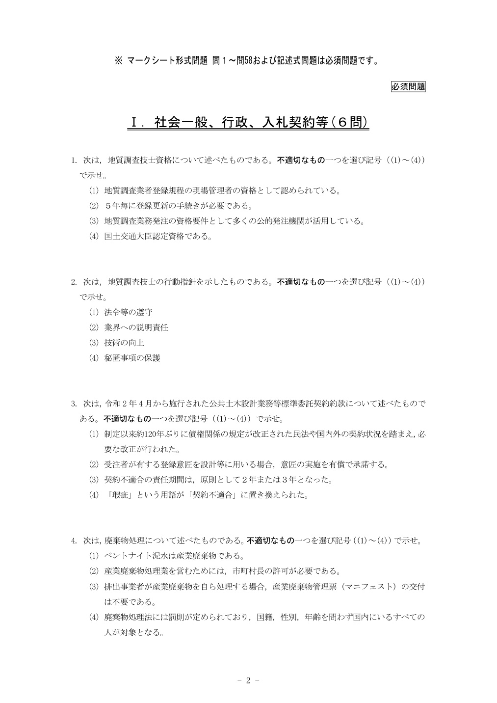
問2
必須
2. 次は，地質調査技士の行動指針を示したものである。不適切なもの一つを選び記号（(1)～(4)）
で示せ。
(1) 法令等の遵守
(2) 業界への説明責任
(3) 技術の向上
(4) 秘匿事項の保護
図表・イラスト確認用：PDF紙面（2ページ）を表示
問3
必須
3. 次は，令和2 年4 月から施行された公共土木設計業務等標準委託契約約款について述べたもので
ある。不適切なもの一つを選び記号（(1)～(4)）で示せ。
(1) 制定以来約120年ぶりに債権関係の規定が改正された民法や国内外の契約状況を踏まえ，必
要な改正が行われた。
(2) 受注者が有する登録意匠を設計等に用いる場合，意匠の実施を有償で承諾する。
(3) 契約不適合の責任期間は，原則として２年または３年となった。
(4) 「瑕疵」という用語が「契約不適合」に置き換えられた。
図表・イラスト確認用：PDF紙面（2ページ）を表示
問4
必須
4. 次は，廃棄物処理について述べたものである。不適切なもの一つを選び記号（(1)～(4)）で示せ。
(1) ベントナイト泥水は産業廃棄物である。
(2) 産業廃棄物処理業を営むためには，市町村長の許可が必要である。
(3) 排出事業者が産業廃棄物を自ら処理する場合，産業廃棄物管理票（マニフェスト）の交付
は不要である。
(4) 廃棄物処理法には罰則が定められており，国籍，性別，年齢を問わず国内にいるすべての
人が対象となる。
- 3 -
図表・イラスト確認用：PDF紙面（2ページ）を表示
問5
必須
5. 次は，地質調査業者登録規定について述べたものである。不適切なもの一つを選び記号（(1)～
(4)）で示せ。
(1) 地質調査業者の登録がなければ，地質調査業の営業を行うことができない。
(2) 地質調査業者登録を受けた者は，毎事業年度経過後４か月以内に，現況報告書を国土交通
大臣に提出しなければならない。
(3) 地質調査業者登録の有効期間は５年間であり，継続する場合は満了の日の90日前から30日
前までの間に更新申請が必要である。
(4) 地質調査業者登録の現場管理者と建設コンサルタント登録の技術管理者は，兼任すること
ができない。
図表・イラスト確認用：PDF紙面（3ページ）を表示
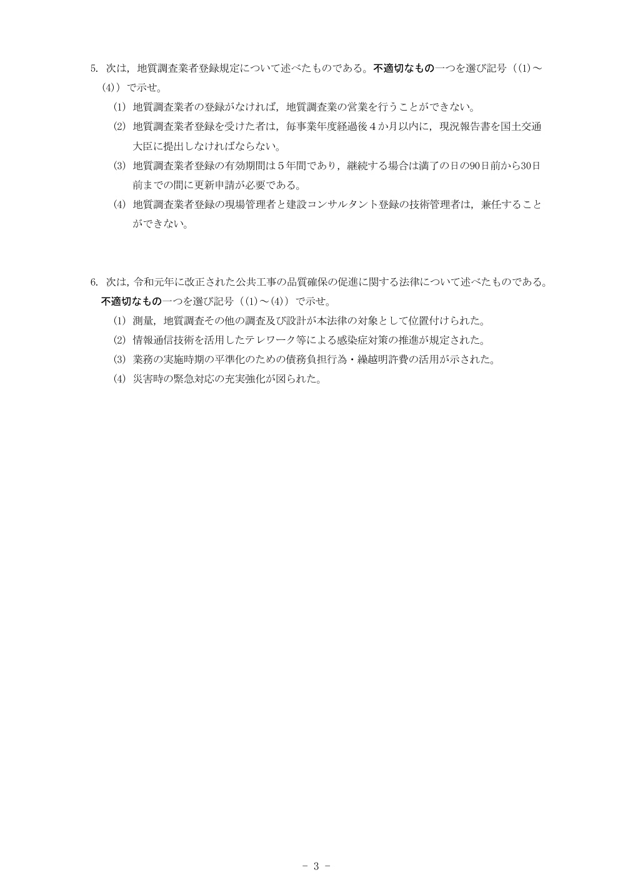
問6
必須
6. 次は，令和元年に改正された公共工事の品質確保の促進に関する法律について述べたものである。
不適切なもの一つを選び記号（(1)～(4)）で示せ。
(1) 測量，地質調査その他の調査及び設計が本法律の対象として位置付けられた。
(2) 情報通信技術を活用したテレワーク等による感染症対策の推進が規定された。
(3) 業務の実施時期の平準化のための債務負担行為・繰越明許費の活用が示された。
(4) 災害時の緊急対応の充実強化が図られた。
- 4 -
必須問題
Ⅱ．地質、測量、土木、建築等の知識(８問)
図表・イラスト確認用：PDF紙面（3ページ）を表示
問7
必須
7. 次は，地質構造を示す概念図とその名称を組合せたものである。不適切なもの一つを選び記号
（(1)～(4)）で示せ。
(1) 向斜構造 (2) 単斜構造 (3)逆断層 (4)左横ずれ断層
図表・イラスト確認用：PDF紙面（4ページ）を表示
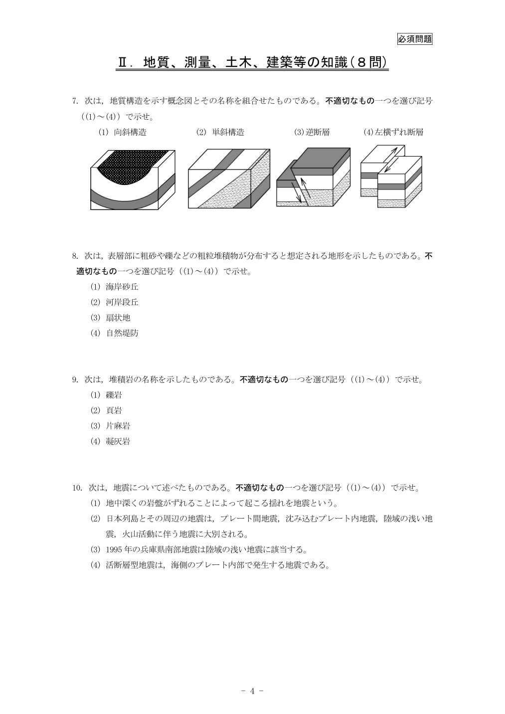
問8
必須
8. 次は，表層部に粗砂や礫などの粗粒堆積物が分布すると想定される地形を示したものである。不
適切なもの一つを選び記号（(1)～(4)）で示せ。
(1) 海岸砂丘
(2) 河岸段丘
(3) 扇状地
(4) 自然堤防
図表・イラスト確認用：PDF紙面（4ページ）を表示
問9
必須
9. 次は，堆積岩の名称を示したものである。不適切なもの一つを選び記号（(1)～(4)）で示せ。
(1) 礫岩
(2) 頁岩
(3) 片麻岩
(4) 凝灰岩
図表・イラスト確認用：PDF紙面（4ページ）を表示
問10
必須
10. 次は，地震について述べたものである。不適切なもの一つを選び記号（(1)～(4)）で示せ。
(1) 地中深くの岩盤がずれることによって起こる揺れを地震という。
(2) 日本列島とその周辺の地震は，プレート間地震，沈み込むプレート内地震，陸域の浅い地
震，火山活動に伴う地震に大別される。
(3) 1995 年の兵庫県南部地震は陸域の浅い地震に該当する。
(4) 活断層型地震は，海側のプレート内部で発生する地震である。
- 5 -
図表・イラスト確認用：PDF紙面（4ページ）を表示
問11
必須
11. 次は，測量の基本事項について述べたものである。不適切なもの一つを選び記号（(1)～(4)）
で示せ。
(1) 平面直角座標系では，座標系原点において真北に向う値がＸ軸の正，真東に向う値がＹ軸
の正となっている。
(2) 日本では，東京湾の中等潮位（平均海面：T.P.）が標高の基準であり，日本水準原点の値
を用いることになっている。
(3) 現在使用されている日本水準原点の標高値は，昭和24 年の測量法施行令制定により定めら
れた値である。
(4) 日本国内でGNSS 測量を行う場合には，ITRF 座標系GRS80 楕円体を用いるよう定められて
いる。
図表・イラスト確認用：PDF紙面（5ページ）を表示
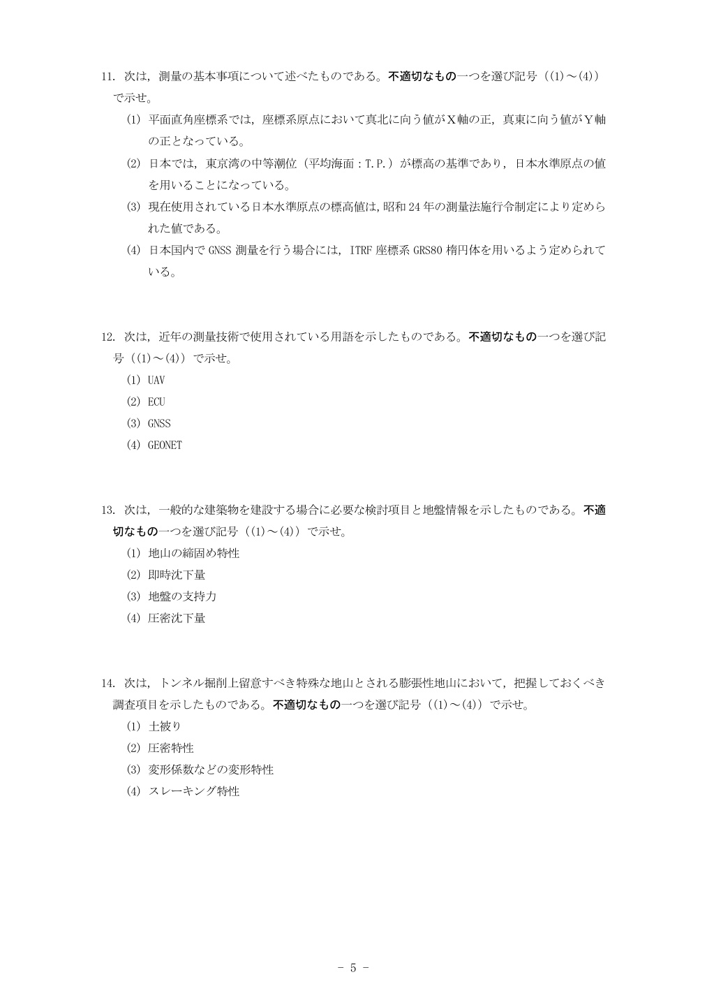
問12
必須
12. 次は，近年の測量技術で使用されている用語を示したものである。不適切なもの一つを選び記
号（(1)～(4)）で示せ。
(1) UAV
(2) ECU
(3) GNSS
(4) GEONET
図表・イラスト確認用：PDF紙面（5ページ）を表示
問13
必須
13. 次は，一般的な建築物を建設する場合に必要な検討項目と地盤情報を示したものである。不適
切なもの一つを選び記号（(1)～(4)）で示せ。
(1) 地山の締固め特性
(2) 即時沈下量
(3) 地盤の支持力
(4) 圧密沈下量
図表・イラスト確認用：PDF紙面（5ページ）を表示
問14
必須
14. 次は，トンネル掘削上留意すべき特殊な地山とされる膨張性地山において，把握しておくべき
調査項目を示したものである。不適切なもの一つを選び記号（(1)～(4)）で示せ。
(1) 土被り
(2) 圧密特性
(3) 変形係数などの変形特性
(4) スレーキング特性
- 6 -
必須問題
Ⅲ．現場技術の知識(３２問)
図表・イラスト確認用：PDF紙面（5ページ）を表示
問15
必須
15. 以下の文章は，ボーリングマシンの油圧装置について述べたものである。文章中の空欄Ａ
～Ｄに当てはまる語句の適切な組合せ一つを選び記号（(1)～(4)）で示せ。
ボーリングマシンにおいては，給進シリンダ，スライドベースシリンダ， Ａ などに油
圧が用いられている。油圧は，力の大きさ， Ｂ ，方向を容易に制御できる優れた特徴を持っ
ている。油圧発生部は，オイルタンクと Ｃ からなり，油圧制御部は Ｄ 制御弁，流量
制御弁，方向制御弁から構成されている。
記号
Ａ
Ｂ
Ｃ
Ｄ
(1)
(2)
(3)
(4)
油圧バルブ
油圧チャック
油圧バルブ
油圧チャック
速 度
速 度
形
形
油圧モータ
油圧ポンプ
油圧ポンプ
油圧モータ
圧 力
圧 力
強 力
強 力
図表・イラスト確認用：PDF紙面（6ページ）を表示
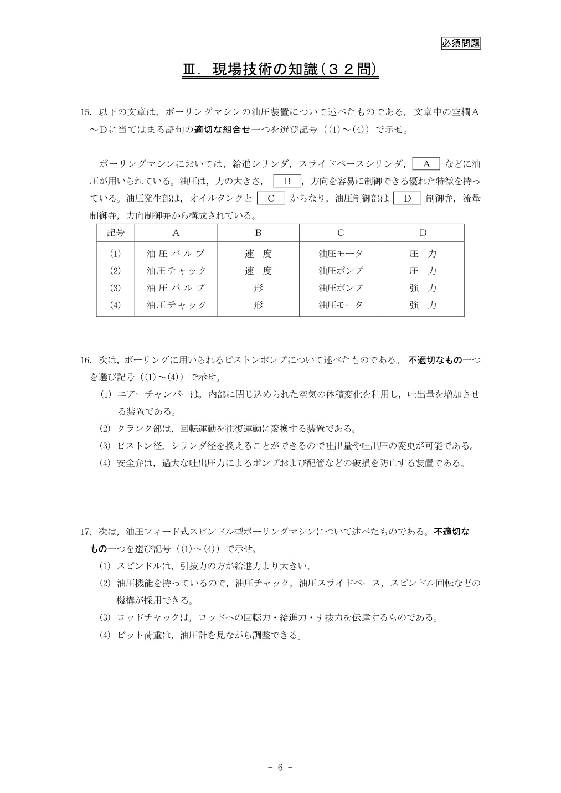
問16
必須
16. 次は，ボーリングに用いられるピストンポンプについて述べたものである。 不適切なもの一つ
を選び記号（(1)～(4)）で示せ。
(1) エアーチャンバーは，内部に閉じ込められた空気の体積変化を利用し，吐出量を増加させ
る装置である。
(2) クランク部は，回転運動を往復運動に変換する装置である。
(3) ピストン径，シリンダ径を換えることができるので吐出量や吐出圧の変更が可能である。
(4) 安全弁は，過大な吐出圧力によるポンプおよび配管などの破損を防止する装置である。
図表・イラスト確認用：PDF紙面（6ページ）を表示
問17
必須
17. 次は，油圧フィード式スピンドル型ボーリングマシンについて述べたものである。不適切な
もの一つを選び記号（(1)～(4)）で示せ。
(1) スピンドルは，引抜力の方が給進力より大きい。
(2) 油圧機能を持っているので，油圧チャック，油圧スライドベース，スピンドル回転などの
機構が採用できる。
(3) ロッドチャックは，ロッドへの回転力・給進力・引抜力を伝達するものである。
(4) ビット荷重は，油圧計を見ながら調整できる。
- 7 -
図表・イラスト確認用：PDF紙面（6ページ）を表示
問18
必須
18. 次は，復動ピストンポンプについて述べたものである。文章中の空欄Ａ～Ｄに当てはまる語句
の適切な組合せ一つを選び記号（(1)～(4)）で示せ。
復動ピストンポンプは，入力軸およびギヤの回転運動を Ａ およびコネクティングロッド
の機構によりピストンに Ｂ を与えている。入力軸およびギヤの速度は Ｃ して回転し
ているが，ピストン速度は常に変化しており，行程の両端において速度はゼロとなり，中央にお
いては Ｄ となる。
記号
Ａ
Ｂ
Ｃ
Ｄ
(1)
(2)
(3)
(4)
変速装置
クランク
変速装置
クランク
往復運動
上下運動
上下運動
往復運動
加 速
一 定
加 速
一 定
最 大
最 小
最 小
最 大
図表・イラスト確認用：PDF紙面（7ページ）を表示
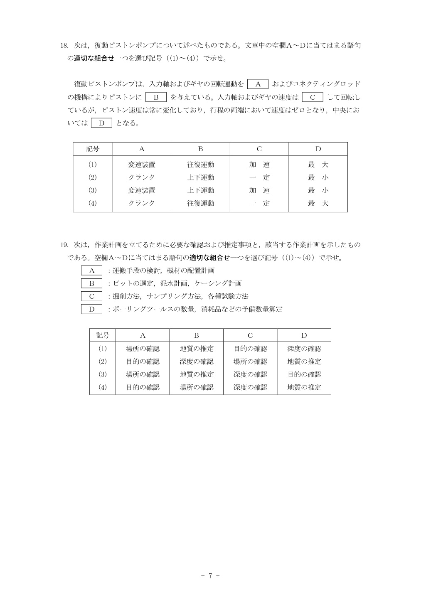
問19
必須
19. 次は，作業計画を立てるために必要な確認および推定事項と，該当する作業計画を示したもの
である。空欄Ａ～Ｄに当てはまる語句の適切な組合せ一つを選び記号（(1)～(4)）で示せ。
Ａ ：運搬手段の検討，機材の配置計画
Ｂ ：ビットの選定，泥水計画，ケーシング計画
Ｃ ：掘削方法，サンプリング方法，各種試験方法
Ｄ ：ボーリングツールスの数量，消耗品などの予備数量算定
記号
Ａ
Ｂ
Ｃ
Ｄ
(1)
(2)
(3)
(4)
場所の確認
目的の確認
場所の確認
目的の確認
地質の推定
深度の確認
地質の推定
場所の確認
目的の確認
場所の確認
深度の確認
深度の確認
深度の確認
地質の推定
目的の確認
地質の推定
- 8 -
図表・イラスト確認用：PDF紙面（7ページ）を表示
問20
必須
20. 次は，ボーリング用機材の小運搬に使用されるモノレールについて述べたものである。文章中の空
欄Ａ～Ｄに当てはまる語句の適切な組合せ一つを選び記号（(1)～(4)）で示せ。
モノレールは地表近くに設置された Ａ を駆動輪とローラーで挟み走行するもので，一般的に，
原動機を搭載した Ｂ と機材を搭載する Ｃ により構成される。近・中距離の Ｄ の
運搬に適している。
記号
Ａ
Ｂ
Ｃ
Ｄ
(1)
(2)
(3)
(4)
ワイヤ
レール
ワイヤ
レール
台
車
けん引装置
けん引装置
台
車
けん引装置
台
車
台
車
けん引装置
急傾斜地
急傾斜地
緩傾斜地
緩傾斜地
図表・イラスト確認用：PDF紙面（8ページ）を表示
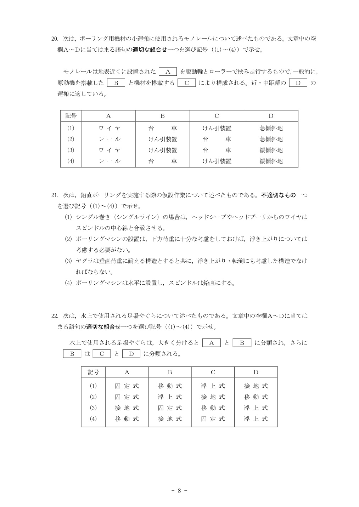
問21
必須
21. 次は，鉛直ボーリングを実施する際の仮設作業について述べたものである。不適切なもの一つ
を選び記号（(1)～(4)）で示せ。
(1) シングル巻き（シングルライン）の場合は，ヘッドシーブやヘッドプーリからのワイヤは
スピンドルの中心線と合致させる。
(2) ボーリングマシンの設置は，下方荷重に十分な考慮をしておけば，浮き上がりについては
考慮する必要がない。
(3) ヤグラは垂直荷重に耐える構造とすると共に，浮き上がり・転倒にも考慮した構造でなけ
ればならない。
(4) ボーリングマシンは水平に設置し，スピンドルは鉛直にする。
図表・イラスト確認用：PDF紙面（8ページ）を表示
問22
必須
22. 次は，水上で使用される足場やぐらについて述べたものである。文章中の空欄Ａ～Ｄに当ては
まる語句の適切な組合せ一つを選び記号（(1)～(4)）で示せ。
水上で使用される足場やぐらは，大きく分けると Ａ と Ｂ に分類され，さらに
Ｂ は Ｃ と Ｄ に分類される。
記号
Ａ
Ｂ
Ｃ
Ｄ
(1)
(2)
(3)
(4)
固定式
固定式
接地式
移動式
移動式
浮上式
固定式
接地式
浮上式
接地式
移動式
固定式
接地式
移動式
浮上式
浮上式
- 9 -
図表・イラスト確認用：PDF紙面（8ページ）を表示
問23
必須
23. 下表は，単管足場を使用した調査ボーリングにおける機材の解体・撤去時の主な作業項目につ
いて，一般的な作業順序を示したものである。適切な組合せ一つを選び記号（(1)～(4)）で示せ。
記号
作業項目と作業順序
１番目
２番目
３番目
４番目
(1)
(2)
(3)
(4)
ケーシング抜管
やぐら解体
ケーシング抜管
ボーリングマシン撤去
やぐら解体
単管足場解体
単管足場解体
やぐら解体
ボーリングマシン撤去
ケーシング抜管
ボーリングマシン撤去
ケーシング抜管
単管足場解体
ボーリングマシン撤去
やぐら解体
単管足場解体
図表・イラスト確認用：PDF紙面（9ページ）を表示
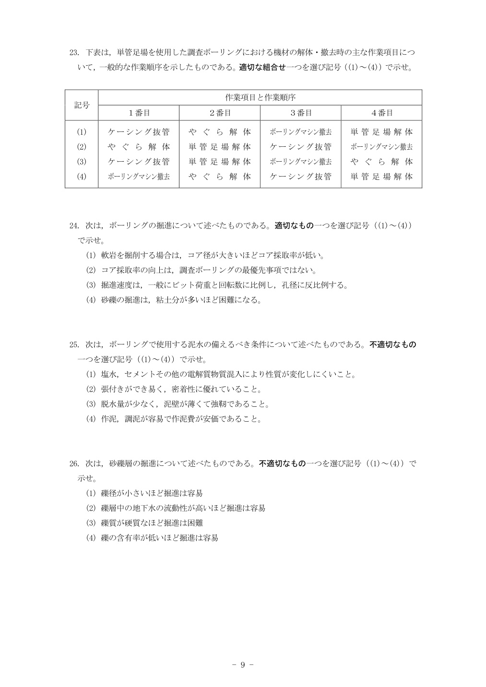
問24
必須
24. 次は，ボーリングの掘進について述べたものである。適切なもの一つを選び記号（(1)～(4)）
で示せ。
(1) 軟岩を掘削する場合は，コア径が大きいほどコア採取率が低い。
(2) コア採取率の向上は，調査ボーリングの最優先事項ではない。
(3) 掘進速度は，一般にビット荷重と回転数に比例し，孔径に反比例する。
(4) 砂礫の掘進は，粘土分が多いほど困難になる。
図表・イラスト確認用：PDF紙面（9ページ）を表示
問25
必須
25. 次は，ボーリングで使用する泥水の備えるべき条件について述べたものである。不適切なもの
一つを選び記号（(1)～(4)）で示せ。
(1) 塩水，セメントその他の電解質物質混入により性質が変化しにくいこと。
(2) 張付きができ易く，密着性に優れていること。
(3) 脱水量が少なく，泥壁が薄くて強靭であること。
(4) 作泥，調泥が容易で作泥費が安価であること。
図表・イラスト確認用：PDF紙面（9ページ）を表示
問26
必須
26. 次は，砂礫層の掘進について述べたものである。不適切なもの一つを選び記号（(1)～(4)）で
示せ。
(1) 礫径が小さいほど掘進は容易
(2) 礫層中の地下水の流動性が高いほど掘進は容易
(3) 礫質が硬質なほど掘進は困難
(4) 礫の含有率が低いほど掘進は容易
- 10 -
図表・イラスト確認用：PDF紙面（9ページ）を表示
問27
必須
27. 次は，ケーシングによる保孔について述べたものである。適切なもの一つを選び記号（(1)～(4)）
で示せ。
(1) ケーシング挿入ごとに孔径は大きくなり，掘削器具をそのたびに変更しなければならない。
(2) ケーシングの先端はなるべく沈下や逸水のない層で止めるようにする。
(3) ケーシング挿入前の循環水は抜管を考慮して清水にする。
(4) ケーシングが挿入されていても，全ての孔内検層は測定できる。
図表・イラスト確認用：PDF紙面（10ページ）を表示
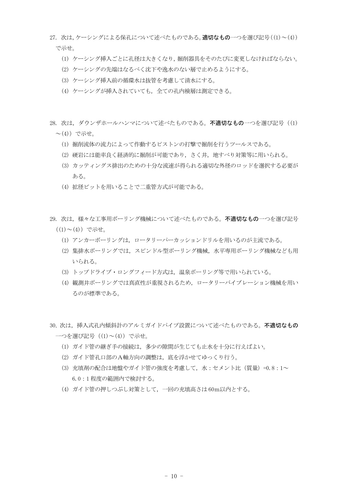
問28
必須
28. 次は，ダウンザホールハンマについて述べたものである。不適切なもの一つを選び記号（(1)
～(4)）で示せ。
(1) 掘削流体の流力によって作動するピストンの打撃で掘削を行うツールスである。
(2) 硬岩には能率良く経済的に掘削が可能であり，さく井，地すべり対策等に用いられる。
(3) カッティングス排出のための十分な流速が得られる適切な外径のロッドを選択する必要が
ある。
(4) 拡径ビットを用いることで二重管方式が可能である。
図表・イラスト確認用：PDF紙面（10ページ）を表示
問29
必須
29. 次は，様々な工事用ボーリング機械について述べたものである。不適切なもの一つを選び記号
（(1)～(4)）で示せ。
(1) アンカーボーリングは，ロータリーパーカッションドリルを用いるのが主流である。
(2) 集排水ボーリングでは，スピンドル型ボーリング機械，水平専用ボーリング機械なども用
いられる。
(3) トップドライブ・ロングフィード方式は，温泉ボーリング等で用いられている。
(4) 観測井ボーリングでは真直性が重視されるため，ロータリーバイブレーション機械を用い
るのが標準である。
図表・イラスト確認用：PDF紙面（10ページ）を表示
問30
必須
30. 次は，挿入式孔内傾斜計のアルミガイドパイプ設置について述べたものである。不適切なもの
一つを選び記号（(1)～(4)）で示せ。
(1) ガイド管の継ぎ手の接続は，多少の隙間が生じても止水を十分に行えばよい。
(2) ガイド管孔口部のＡ軸方向の調整は，底を浮かせてゆっくり行う。
(3) 充填剤の配合は地盤やガイド管の強度を考慮して，水：セメント比（質量）=0.8：1～
6.0：1 程度の範囲内で検討する。
(4) ガイド管の押しつぶし対策として，一回の充填高さは60ｍ以内とする。
- 11 -
図表・イラスト確認用：PDF紙面（10ページ）を表示
問31
必須
31. 次は，基準化されたサンプリング法と適用地盤の関係について述べたものである。適切なもの
一つを選び記号（(1)～(4)）で示せ。
(1) 固定ピストン式シンウォールサンプラー（JGS 1221-2012）は，砂礫地盤に適している。
(2) ロータリー式二重管サンプラー（JGS 1222-2012）は，砂質土地盤に適用可能である。
(3) ロータリー式三重管サンプラー（JGS 1223-2012）は，岩盤に適用可能である。
(4) ブロックサンプリング（JGS 1231-2012）は，粘性土地盤に適している。
図表・イラスト確認用：PDF紙面（11ページ）を表示
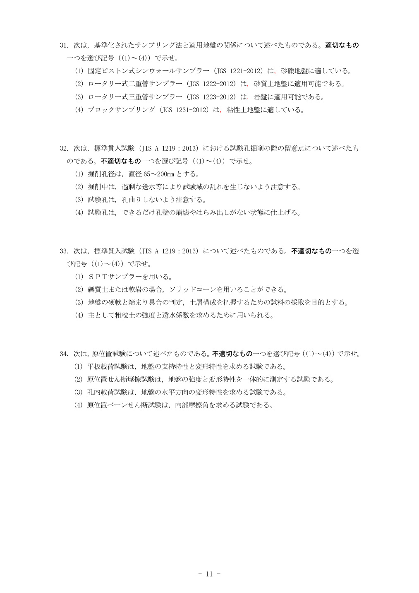
問32
必須
32. 次は，標準貫入試験（JIS A 1219：2013）における試験孔掘削の際の留意点について述べたも
のである。不適切なもの一つを選び記号（(1)～(4)）で示せ。
(1) 掘削孔径は，直径65～200mm とする。
(2) 掘削中は，過剰な送水等により試験域の乱れを生じないよう注意する。
(3) 試験孔は，孔曲りしないよう注意する。
(4) 試験孔は，できるだけ孔壁の崩壊やはらみ出しがない状態に仕上げる。
図表・イラスト確認用：PDF紙面（11ページ）を表示
問33
必須
33. 次は，標準貫入試験（JIS A 1219：2013）について述べたものである。不適切なもの一つを選
び記号（(1)～(4)）で示せ。
(1) ＳＰＴサンプラーを用いる。
(2) 礫質土または軟岩の場合，ソリッドコーンを用いることができる。
(3) 地盤の硬軟と締まり具合の判定，土層構成を把握するための試料の採取を目的とする。
(4) 主として粗粒土の強度と透水係数を求めるために用いられる。
図表・イラスト確認用：PDF紙面（11ページ）を表示
問34
必須
34. 次は，原位置試験について述べたものである。不適切なもの一つを選び記号（(1)～(4)）で示せ。
(1) 平板載荷試験は，地盤の支持特性と変形特性を求める試験である。
(2) 原位置せん断摩擦試験は，地盤の強度と変形特性を一体的に測定する試験である。
(3) 孔内載荷試験は，地盤の水平方向の変形特性を求める試験である。
(4) 原位置ベーンせん断試験は，内部摩擦角を求める試験である。
- 12 -
図表・イラスト確認用：PDF紙面（11ページ）を表示
問35
必須
35. 次は，間隙水圧測定の種類と特徴について述べたものである。空欄Ａ～Ｄに当てはまる語句の
適切な組合せ一つを選び記号（(1)～(4)）で示せ。
間隙水圧の短期的な測定を実施する場合，砂層に対しては Ａ の Ｂ が，粘土層に対して
は Ｃ の Ｄ が用いられることが多い。
記号
Ａ
Ｂ
Ｃ
Ｄ
(1)
(2)
(3)
(4)
開放型
閉鎖型
開放型
閉鎖型
電気式間隙水圧計
ケーシング法
ケーシング法
電気式間隙水圧計
閉鎖型
開放型
閉鎖型
開放型
ケーシング法
電気式間隙水圧計
電気式間隙水圧計
ケーシング法
図表・イラスト確認用：PDF紙面（12ページ）を表示
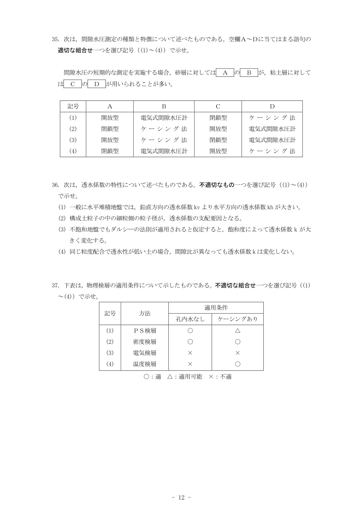
問36
必須
36. 次は，透水係数の特性について述べたものである。不適切なもの一つを選び記号（(1)～(4)）
で示せ。
(1) 一般に水平堆積地盤では，鉛直方向の透水係数kv より水平方向の透水係数kh が大きい。
(2) 構成土粒子の中の細粒側の粒子径が，透水係数の支配要因となる。
(3) 不飽和地盤でもダルシーの法則が適用されると仮定すると，飽和度によって透水係数k が大
きく変化する。
(4) 同じ粒度配合で透水性が低い土の場合，間隙比が異なっても透水係数k は変化しない。
図表・イラスト確認用：PDF紙面（12ページ）を表示
問37
必須
37. 下表は，物理検層の適用条件について示したものである。不適切な組合せ一つを選び記号（(1)
～(4)）で示せ。
記号
方法
適用条件
孔内水なし
ケーシングあり
(1)
(2)
(3)
(4)
ＰＳ検層
密度検層
電気検層
温度検層
○
〇
×
×
△
〇
×
〇
〇：適 △：適用可能 ×：不適
- 13 -
図表・イラスト確認用：PDF紙面（12ページ）を表示
問38
必須
38. 次は，地盤の電気検層方法（JGS 1121-2012）について述べたものである。不適切なもの一つを
選び記号（(1)～(4)）で示せ。
(1) 孔口と地表電極との距離は，最大電極間隔の20 倍以上を目安とする。
(2) ボーリングの孔内水位より浅い区間において，測定できる。
(3) ケーシングパイプで保孔されている区間では，測定できない。
(4) 電気検層結果は，挟み層の検出，帯水層の検出等に用いられる。
図表・イラスト確認用：PDF紙面（13ページ）を表示
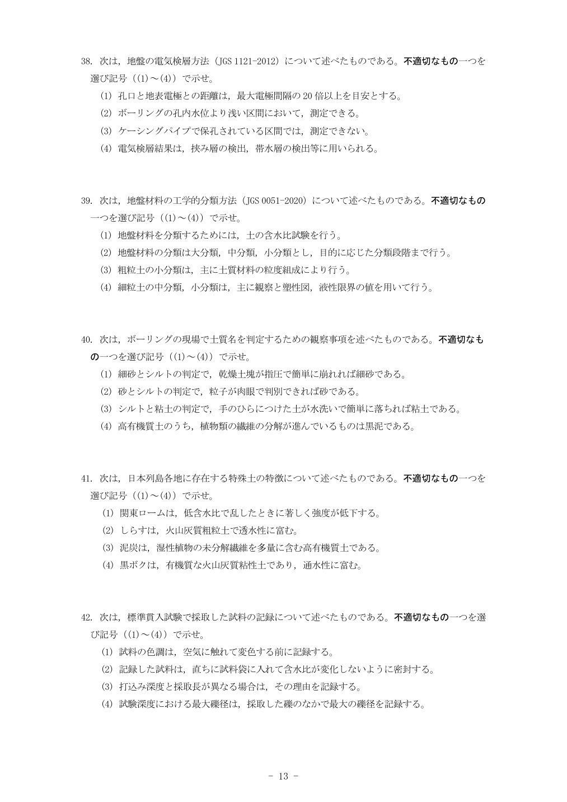
問39
必須
39. 次は，地盤材料の工学的分類方法（JGS 0051-2020）について述べたものである。不適切なもの
一つを選び記号（(1)～(4)）で示せ。
(1) 地盤材料を分類するためには，土の含水比試験を行う。
(2) 地盤材料の分類は大分類，中分類，小分類とし，目的に応じた分類段階まで行う。
(3) 粗粒土の小分類は，主に土質材料の粒度組成により行う。
(4) 細粒土の中分類，小分類は，主に観察と塑性図，液性限界の値を用いて行う。
図表・イラスト確認用：PDF紙面（13ページ）を表示
問40
必須
40. 次は，ボーリングの現場で土質名を判定するための観察事項を述べたものである。不適切なも
の一つを選び記号（(1)～(4)）で示せ。
(1) 細砂とシルトの判定で，乾燥土塊が指圧で簡単に崩れれば細砂である。
(2) 砂とシルトの判定で，粒子が肉眼で判別できれば砂である。
(3) シルトと粘土の判定で，手のひらにつけた土が水洗いで簡単に落ちれば粘土である。
(4) 高有機質土のうち，植物類の繊維の分解が進んでいるものは黒泥である。
図表・イラスト確認用：PDF紙面（13ページ）を表示
問41
必須
41. 次は，日本列島各地に存在する特殊土の特徴について述べたものである。不適切なもの一つを
選び記号（(1)～(4)）で示せ。
(1) 関東ロームは，低含水比で乱したときに著しく強度が低下する。
(2) しらすは，火山灰質粗粒土で透水性に富む。
(3) 泥炭は，湿性植物の未分解繊維を多量に含む高有機質土である。
(4) 黒ボクは，有機質な火山灰質粘性土であり，通水性に富む。
図表・イラスト確認用：PDF紙面（13ページ）を表示
問42
必須
42. 次は，標準貫入試験で採取した試料の記録について述べたものである。不適切なもの一つを選
び記号（(1)～(4)）で示せ。
(1) 試料の色調は，空気に触れて変色する前に記録する。
(2) 記録した試料は，直ちに試料袋に入れて含水比が変化しないように密封する。
(3) 打込み深度と採取長が異なる場合は，その理由を記録する。
(4) 試験深度における最大礫径は，採取した礫のなかで最大の礫径を記録する。
- 14 -
図表・イラスト確認用：PDF紙面（13ページ）を表示
問43
必須
43. 下表は，挟み層の状態を示したものである。表現名と挟み層の状態の組合せとして，不適切な
もの一つを選び記号（(1)～(4)）で示せ。
記号
表現名
挟み層の状態
(1)
互
層
状
(2)
ブロック状
(3)
シーム状
(4)
薄
層
状
図表・イラスト確認用：PDF紙面（14ページ）を表示
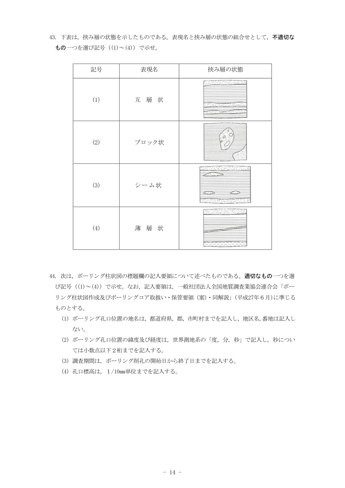
問44
必須
44. 次は，ボーリング柱状図の標題欄の記入要領について述べたものである。適切なもの一つを選
び記号（（1)～(4））で示せ。なお，記入要領は，一般社団法人全国地質調査業協会連合会「ボー
リング柱状図作成及びボーリングコア取扱い・保管要領（案）・同解説」(平成27年６月)に準じる
ものとする。
(1) ボーリング孔口位置の地名は，都道府県，郡，市町村までを記入し，地区名,番地は記入し
ない。
(2) ボーリング孔口位置の緯度及び経度は，世界測地系の「度，分，秒」で記入し，秒につい
ては小数点以下２桁までを記入する。
(3) 調査期間は，ボーリング削孔の開始日から終了日までを記入する。
(4) 孔口標高は，１/10mm単位までを記入する。
- 15 -
図表・イラスト確認用：PDF紙面（14ページ）を表示
問45
必須
45. 次は，土の色調観察について述べたものである。Ａ～Ｃに当てはまる語句の組合せとして，適
切なもの一つ選び記号（(1)～(4)）で示せ。
色調観察の要点は，「① Ａ 状態での色調」，「②マトリックスの色調」の２点が挙げられる。
①については，コアや標準貫入試験試料を取り出した直後から， Ｂ によって， Ｃ に変色する
ことが日常観察される。
記号
Ａ
Ｂ
Ｃ
(1)
風化した
還元作用
褐色
(2)
風化した
酸化作用
暗灰
(3)
新鮮な
還元作用
暗灰
(4)
新鮮な
酸化作用
褐色
図表・イラスト確認用：PDF紙面（15ページ）を表示
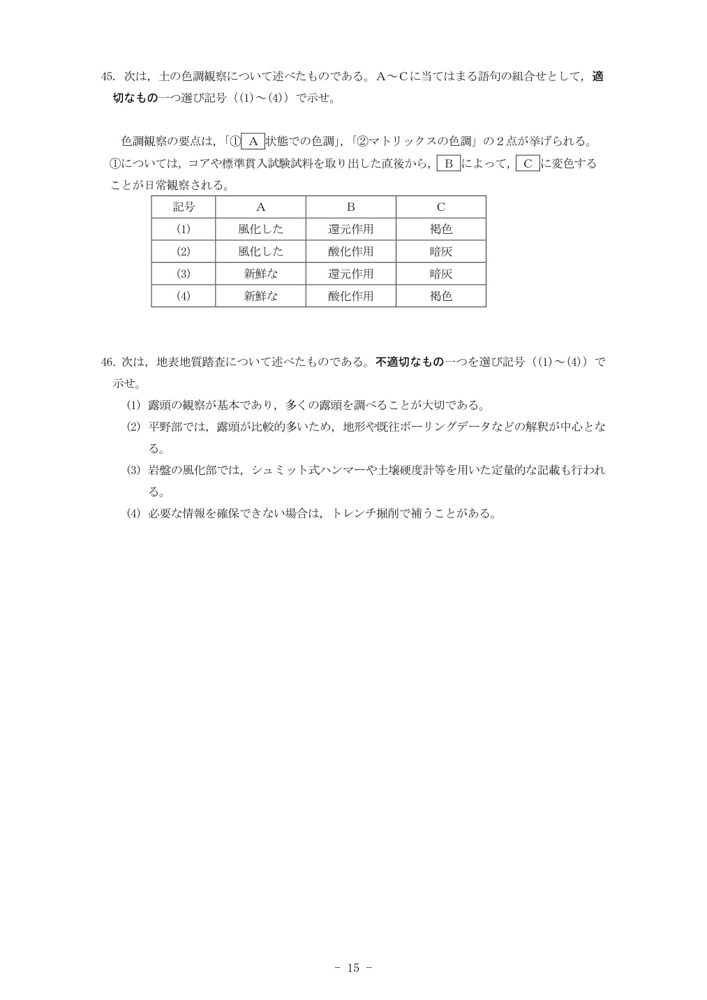
問46
必須
46. 次は，地表地質踏査について述べたものである。不適切なもの一つを選び記号（(1)～(4)）で
示せ。
(1) 露頭の観察が基本であり，多くの露頭を調べることが大切である。
(2) 平野部では，露頭が比較的多いため，地形や既往ボーリングデータなどの解釈が中心とな
る。
(3) 岩盤の風化部では，シュミット式ハンマーや土壌硬度計等を用いた定量的な記載も行われ
る。
(4) 必要な情報を確保できない場合は，トレンチ掘削で補うことがある。
- 16 -
必須問題
Ⅳ．調査技術の理解度(４問)
図表・イラスト確認用：PDF紙面（15ページ）を表示
問47
必須
47. 次は，屈折法地震探査（弾性波探査）について述べたものである。適切なもの一つを選び記号
（(1)～(4)）で示せ。
(1) 地層の硬軟，割れ目の程度，風化変質帯などの分布状況との関連付けが可能である。
(2) 起振点から発し，地層境界で反射してくる弾性波を使って解析する。
(3) 探査測線は，曲線とするのが原則である。
(4) 幅の狭い断層破砕帯でも確実に検出可能である。
図表・イラスト確認用：PDF紙面（16ページ）を表示
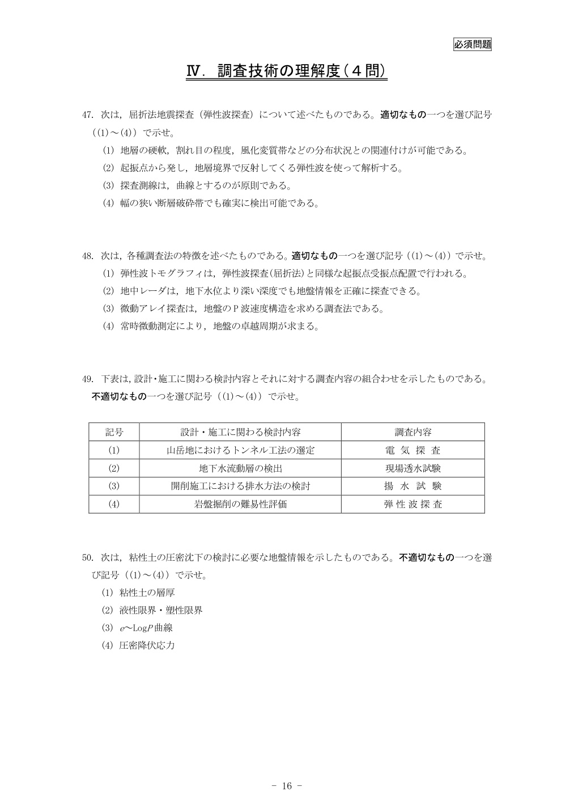
問48
必須
48. 次は，各種調査法の特徴を述べたものである。適切なもの一つを選び記号（(1)～(4)）で示せ。
(1) 弾性波トモグラフィは，弾性波探査(屈折法)と同様な起振点受振点配置で行われる。
(2) 地中レーダは，地下水位より深い深度でも地盤情報を正確に探査できる。
(3) 微動アレイ探査は，地盤のP 波速度構造を求める調査法である。
(4) 常時微動測定により，地盤の卓越周期が求まる。
図表・イラスト確認用：PDF紙面（16ページ）を表示
問49
必須
49. 下表は，設計・施工に関わる検討内容とそれに対する調査内容の組合わせを示したものである。
不適切なもの一つを選び記号（(1)～(4)）で示せ。
記号
設計・施工に関わる検討内容
調査内容
(1)
山岳地におけるトンネル工法の選定
電気探査
(2)
地下水流動層の検出
現場透水試験
(3)
開削施工における排水方法の検討
揚水試験
(4)
岩盤掘削の難易性評価
弾性波探査
図表・イラスト確認用：PDF紙面（16ページ）を表示
問50
必須
50. 次は，粘性土の圧密沈下の検討に必要な地盤情報を示したものである。不適切なもの一つを選
び記号（(1)～(4)）で示せ。
(1) 粘性土の層厚
(2) 液性限界・塑性限界
(3) e～LogP 曲線
(4) 圧密降伏応力
- 17 -
必須問題
Ⅴ．管理技法(８問)
図表・イラスト確認用：PDF紙面（16ページ）を表示
問51
必須
51. 次は，労働安全衛生規則で定められている特別教育が必要な作業を示したものである。適切な
もの一つを選び記号（(1)～(4)）で示せ。
(1) 高さ５ｍ未満の足場の組立て，解体または変更の作業
(2) 10kN以上の不整地運搬車運転
(3) 10KN以上の玉掛け
(4) ガス溶接
図表・イラスト確認用：PDF紙面（17ページ）を表示
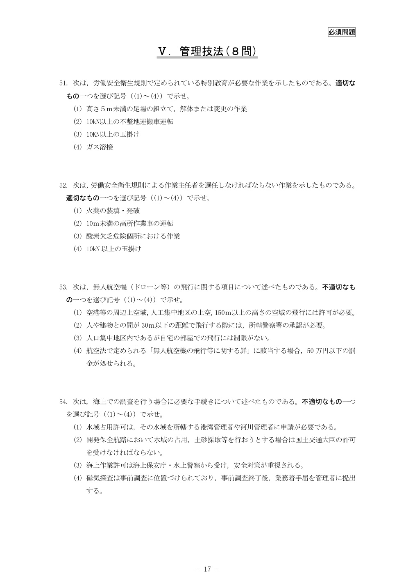
問52
必須
52. 次は，労働安全衛生規則による作業主任者を選任しなければならない作業を示したものである。
適切なもの一つを選び記号（(1)～(4)）で示せ。
(1) 火薬の装填・発破
(2) 10ｍ未満の高所作業車の運転
(3) 酸素欠乏危険個所における作業
(4) 10kN 以上の玉掛け
図表・イラスト確認用：PDF紙面（17ページ）を表示
問53
必須
53. 次は，無人航空機（ドローン等）の飛行に関する項目について述べたものである。不適切なも
の一つを選び記号（(1)～(4)）で示せ。
(1) 空港等の周辺上空域，人工集中地区の上空，150ｍ以上の高さの空域の飛行には許可が必要。
(2) 人や建物との間が30ｍ以下の距離で飛行する際には，所轄警察署の承認が必要。
(3) 人口集中地区内であるが自宅の部屋での飛行には制限がない。
(4) 航空法で定められる「無人航空機の飛行等に関する罪」に該当する場合，50 万円以下の罰
金が処せられる。
図表・イラスト確認用：PDF紙面（17ページ）を表示
問54
必須
54. 次は, 海上での調査を行う場合に必要な手続きについて述べたものである。不適切なもの一つ
を選び記号（(1)～(4)）で示せ。
(1) 水域占用許可は，その水域を所轄する港湾管理者や河川管理者に申請が必要である。
(2) 開発保全航路において水域の占用，土砂採取等を行おうとする場合は国土交通大臣の許可
を受けなければならない。
(3) 海上作業許可は海上保安庁・水上警察から受け，安全対策が重視される。
(4) 磁気探査は事前調査に位置づけられており，事前調査終了後，業務着手届を管理者に提出
する。
- 18 -
図表・イラスト確認用：PDF紙面（17ページ）を表示
問55
必須
55. 次は，足場仮設の安全管理について述べたものである。不適切なもの一つを選び記号（(1)～(4)）
で示せ。
(1) 高さ５ｍ以上の足場の組立・解体には，作業主任者の選任が必要である。
(2) 作業員は作業開始前に足場の点検をする義務がある。
(3) 高さ２ｍ以上の足場には，手すりの下30～50 ㎝の位置に中さんを設ける必要がある。
(4) 高さ２ｍ以上の足場には，高さ85 ㎝以上の手すりを設ける。
図表・イラスト確認用：PDF紙面（18ページ）を表示
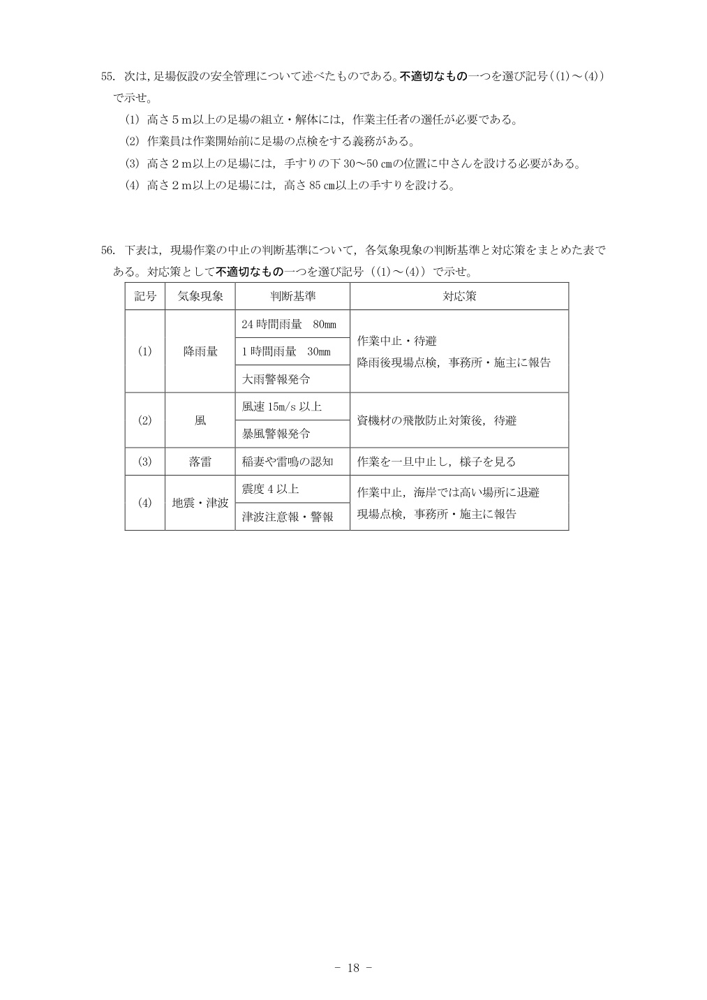
問56
必須
56. 下表は，現場作業の中止の判断基準について，各気象現象の判断基準と対応策をまとめた表で
ある。対応策として不適切なもの一つを選び記号（(1)～(4)）で示せ。
記号
気象現象
判断基準
対応策
(1)
降雨量
24 時間雨量 80mm
作業中止・待避
降雨後現場点検，事務所・施主に報告
1 時間雨量 30mm
大雨警報発令
(2)
風
風速15m/s 以上
資機材の飛散防止対策後，待避
暴風警報発令
(3)
落雷
稲妻や雷鳴の認知
作業を一旦中止し，様子を見る
(4) 地震・津波
震度4 以上
作業中止，海岸では高い場所に退避
現場点検，事務所・施主に報告
津波注意報・警報
- 19 -
図表・イラスト確認用：PDF紙面（18ページ）を表示
問57
必須
57. 次は，国土交通省設計業務等標準積算基準に示された地質調査業務の積算構成に関する項目を
示したものである。下図を参考に不適切なもの一つを選び記号（(1)～(4)）で示せ。
(1) ボーリング費は，直接調査費に含まれる。
(2) 日当宿泊費は，直接調査費に含まれる。
(3) 直接人件費の単価は，毎年公表されている。
(4) 解析等調査業務費は，解析，判定，工法選定等高度な技術力を要する業務費用である。
図表・イラスト確認用：PDF紙面（19ページ）を表示
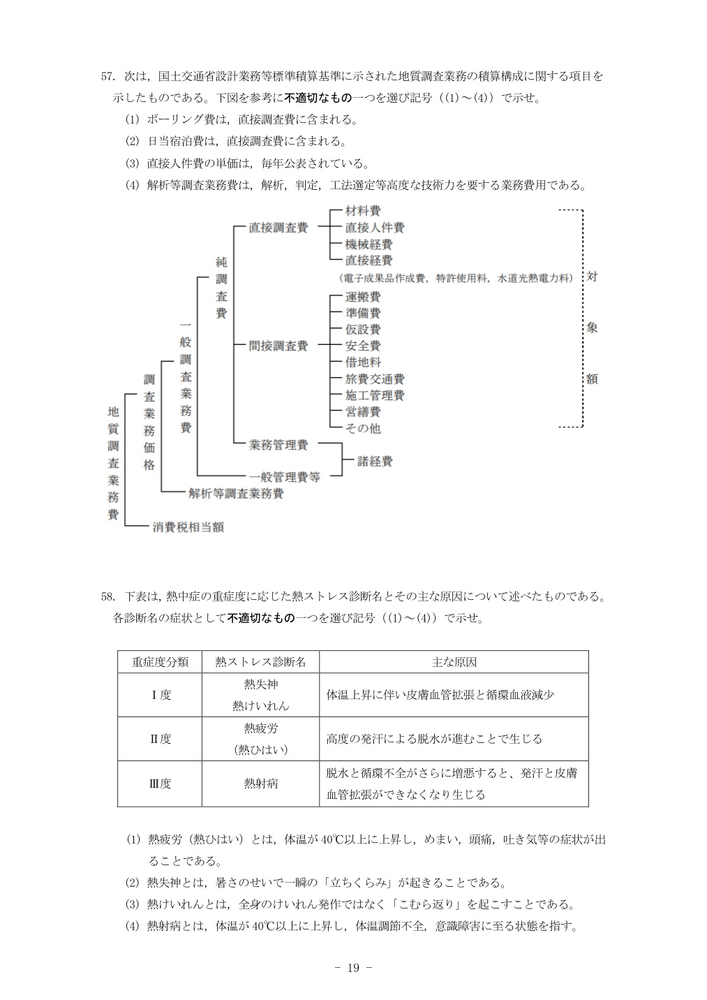
問58
必須
58. 下表は，熱中症の重症度に応じた熱ストレス診断名とその主な原因について述べたものである。
各診断名の症状として不適切なもの一つを選び記号（(1)～(4)）で示せ。
重症度分類
熱ストレス診断名
主な原因
Ⅰ度
熱失神
熱けいれん
体温上昇に伴い皮膚血管拡張と循環血液減少
Ⅱ度
熱疲労
（熱ひはい）
高度の発汗による脱水が進むことで生じる
Ⅲ度
熱射病
脱水と循環不全がさらに増悪すると、発汗と皮膚
血管拡張ができなくなり生じる
(1) 熱疲労（熱ひはい）とは，体温が40℃以上に上昇し，めまい，頭痛，吐き気等の症状が出
ることである。
(2) 熱失神とは，暑さのせいで一瞬の「立ちくらみ」が起きることである。
(3) 熱けいれんとは，全身のけいれん発作ではなく「こむら返り」を起こすことである。
(4) 熱射病とは，体温が40℃以上に上昇し，体温調節不全，意識障害に至る状態を指す。
- 20 -
選択問題
Ⅵ．選 択 問 題
問59から問102は、選択問題である。
以下のＡ群またはＢ群のいずれか一方を任意選択の上、解答すること。
選択問題Ａ群： 22 問（主に土質に関連した分野；問59～問80）
選択問題Ｂ群： 22 問（主に岩盤に関連した分野；問81～問102）
※Ａ群、Ｂ群の選択は、受験願書で選択記載した主な調査対象「土質」、「岩盤」の
いずれかに関わらず、任意で選択することができる。
※Ａ群およびＢ群の両方を解答している場合、選択問題の採点は行わない。
解答用紙への記入の際は、注意して記入すること。
- 21 -
選択問題 Ａ群
選択問題Ａ群：22問（主に土質に関連した分野；問59～問80）
現場技術の知識１８問、調査技術の理解度４問
図表・イラスト確認用：PDF紙面（19ページ）を表示
問59
A群（土質）
59. 次は，ボーリングツールスの機能などについて述べたものである。不適切なもの一つを選び記
号（(1)～(4)）で示せ。
(1) ドライブパイプは，肉厚が厚く丈夫なものであり，先端にシューを接続して機械で回転さ
せながら挿入する。
(2) コアチューブカップリングは，ロットカップリングとコアチューブを接続する用具である。
(3) マッドチューブは，カッティングスを採取するパイプであり，コアチューブの上部に取り
付ける。
(4) コアリフタは，コアシェルやコアリフタケースに内蔵され，コアを切断するとともに脱落
を防ぐ器具である。
図表・イラスト確認用：PDF紙面（21ページ）を表示
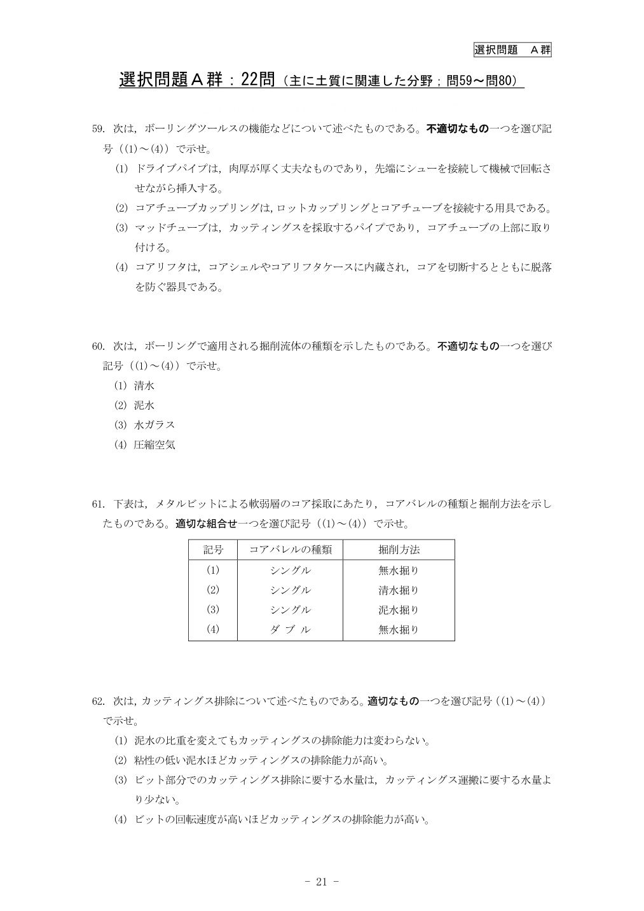
問60
A群（土質）
60. 次は，ボーリングで適用される掘削流体の種類を示したものである。不適切なもの一つを選び
記号（(1)～(4)）で示せ。
(1) 清水
(2) 泥水
(3) 水ガラス
(4) 圧縮空気
図表・イラスト確認用：PDF紙面（21ページ）を表示
問61
A群（土質）
61. 下表は，メタルビットによる軟弱層のコア採取にあたり，コアバレルの種類と掘削方法を示し
たものである。適切な組合せ一つを選び記号（(1)～(4)）で示せ。
図表・イラスト確認用：PDF紙面（21ページ）を表示
問62
A群（土質）
62. 次は，カッティングス排除について述べたものである。適切なもの一つを選び記号（(1)～(4)）
で示せ。
(1) 泥水の比重を変えてもカッティングスの排除能力は変わらない。
(2) 粘性の低い泥水ほどカッティングスの排除能力が高い。
(3) ビット部分でのカッティングス排除に要する水量は，カッティングス運搬に要する水量よ
り少ない。
(4) ビットの回転速度が高いほどカッティングスの排除能力が高い。
記号
コアバレルの種類
掘削方法
(1)
(2)
(3)
(4)
シングル
シングル
シングル
ダブル
無水掘り
清水掘り
泥水掘り
無水掘り
- 22 -
選択問題 Ａ群
図表・イラスト確認用：PDF紙面（21ページ）を表示
問63
A群（土質）
63．次は，掘進中に回転トルクが低下したことにより推察される孔内状況の変化について示したも
のである。不適切なもの一つを選び記号（(1)～(4)）で示せ。
(1) 孔壁の崩壊
(2) コア詰り
(3) ロッドの切断
(4) コアバレルの切断
図表・イラスト確認用：PDF紙面（22ページ）を表示
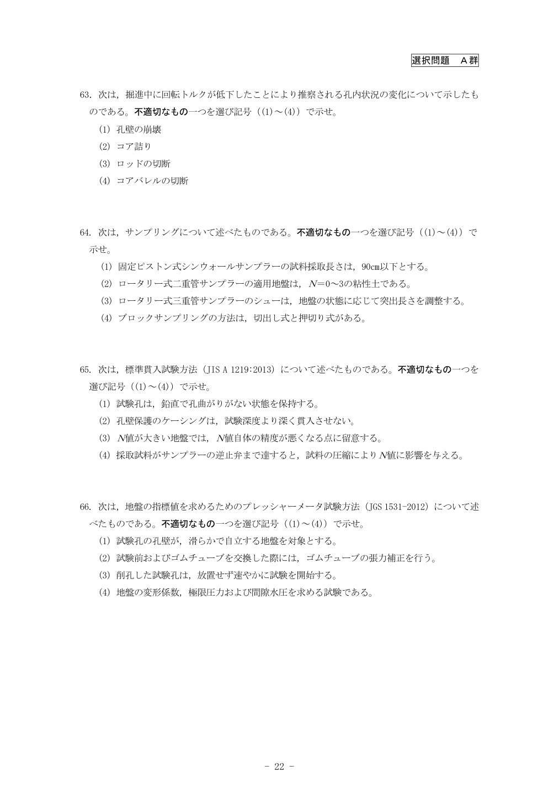
問64
A群（土質）
64. 次は，サンプリングについて述べたものである。不適切なもの一つを選び記号（(1)～(4)）で
示せ。
(1) 固定ピストン式シンウォールサンプラーの試料採取長さは，90㎝以下とする。
(2) ロータリー式二重管サンプラーの適用地盤は，Ｎ＝0～3の粘性土である。
(3) ロータリー式三重管サンプラーのシューは，地盤の状態に応じて突出長さを調整する。
(4) ブロックサンプリングの方法は，切出し式と押切り式がある。
図表・イラスト確認用：PDF紙面（22ページ）を表示
問65
A群（土質）
65. 次は，標準貫入試験方法（JIS A 1219:2013）について述べたものである。不適切なもの一つを
選び記号（(1)～(4)）で示せ。
(1) 試験孔は，鉛直で孔曲がりがない状態を保持する。
(2) 孔壁保護のケーシングは，試験深度より深く貫入させない。
(3) Ｎ値が大きい地盤では，Ｎ値自体の精度が悪くなる点に留意する。
(4) 採取試料がサンプラーの逆止弁まで達すると，試料の圧縮によりＮ値に影響を与える。
図表・イラスト確認用：PDF紙面（22ページ）を表示
問66
A群（土質）
66. 次は，地盤の指標値を求めるためのプレッシャーメータ試験方法（JGS 1531-2012）について述
べたものである。不適切なもの一つを選び記号（(1)～(4)）で示せ。
(1) 試験孔の孔壁が，滑らかで自立する地盤を対象とする。
(2) 試験前およびゴムチューブを交換した際には，ゴムチューブの張力補正を行う。
(3) 削孔した試験孔は，放置せず速やかに試験を開始する。
(4) 地盤の変形係数，極限圧力および間隙水圧を求める試験である。
- 23 -
選択問題 Ａ群
図表・イラスト確認用：PDF紙面（22ページ）を表示
問67
A群（土質）
67. 次は，スクリューウエイト貫入試験方法（JIS A 1221:2020）について述べたものである。不適
切なもの一つを選び記号（(1)～(4)）で示せ。
(1) 戸建住宅など，小規模構造物の支持力特性を把握する調査方法として用いられる。
(2) 回転による貫入と間隙水圧測定とを併用した原位置試験である。
(3) 回転による貫入は，0.25 ㎝の貫入ごとに半回転数を測定する。
(4) 試験中の貫入状況および砂音，れき音などを記事欄に記録する。
図表・イラスト確認用：PDF紙面（23ページ）を表示
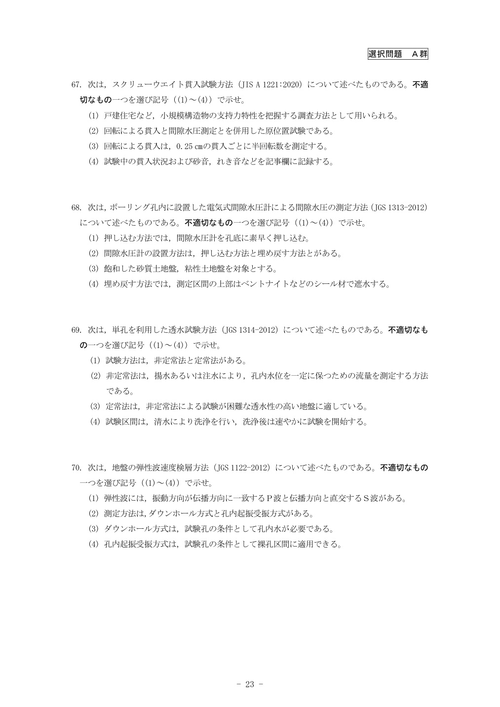
問68
A群（土質）
68. 次は，ボーリング孔内に設置した電気式間隙水圧計による間隙水圧の測定方法（JGS 1313-2012）
について述べたものである。不適切なもの一つを選び記号（(1)～(4)）で示せ。
(1) 押し込む方法では，間隙水圧計を孔底に素早く押し込む。
(2) 間隙水圧計の設置方法は，押し込む方法と埋め戻す方法とがある。
(3) 飽和した砂質土地盤，粘性土地盤を対象とする。
(4) 埋め戻す方法では，測定区間の上部はベントナイトなどのシール材で遮水する。
図表・イラスト確認用：PDF紙面（23ページ）を表示
問69
A群（土質）
69. 次は，単孔を利用した透水試験方法（JGS 1314-2012）について述べたものである。不適切なも
の一つを選び記号（(1)～(4)）で示せ。
(1) 試験方法は，非定常法と定常法がある。
(2) 非定常法は，揚水あるいは注水により，孔内水位を一定に保つための流量を測定する方法
である。
(3) 定常法は，非定常法による試験が困難な透水性の高い地盤に適している。
(4) 試験区間は，清水により洗浄を行い，洗浄後は速やかに試験を開始する。
図表・イラスト確認用：PDF紙面（23ページ）を表示
問70
A群（土質）
70. 次は，地盤の弾性波速度検層方法（JGS 1122-2012）について述べたものである。不適切なもの
一つを選び記号（(1)～(4)）で示せ。
(1) 弾性波には，振動方向が伝播方向に一致するＰ波と伝播方向と直交するＳ波がある。
(2) 測定方法は,ダウンホール方式と孔内起振受振方式がある。
(3) ダウンホール方式は，試験孔の条件として孔内水が必要である。
(4) 孔内起振受振方式は，試験孔の条件として裸孔区間に適用できる。
- 24 -
選択問題 Ａ群
図表・イラスト確認用：PDF紙面（23ページ）を表示
問71
A群（土質）
71. 次は，地盤材料の工学的分類方法（JGS 0051-2020）について述べたものである。不適切なもの
一つを選び記号（(1)～(4)）で示せ。
(1) 粒径が75mm以上の土粒子は，石に区分される。
(2) 粒径が0.050mm未満の土粒子は，粘土に区分される。
(3) 粗粒分が50％を超える土質材料は，粗粒土に区分される。
(4) 粗粒土の分類は，粒度試験結果のれき分・砂分・細粒分の質量百分率を用いて行う。
図表・イラスト確認用：PDF紙面（24ページ）を表示
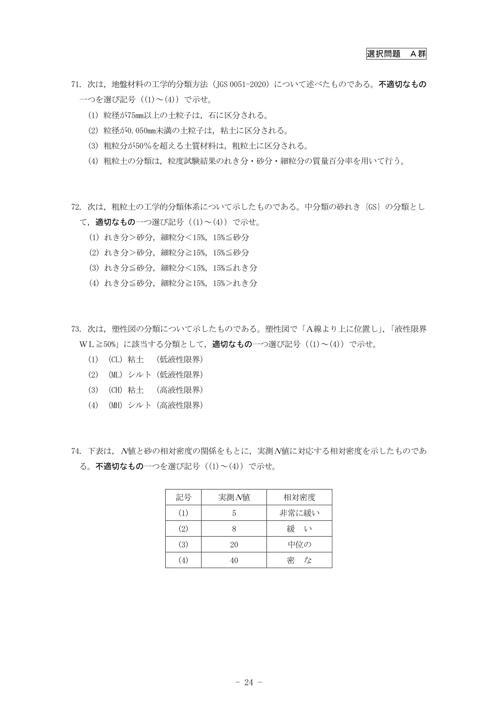
問72
A群（土質）
72. 次は，粗粒土の工学的分類体系について示したものである。中分類の砂れき｛GS｝の分類とし
て，適切なもの一つ選び記号（(1)～(4)）で示せ。
(1) れき分＞砂分，細粒分＜15%，15%≦砂分
(2) れき分＞砂分，細粒分≧15%，15%≦砂分
(3) れき分≦砂分，細粒分＜15%，15%≦れき分
(4) れき分≦砂分，細粒分≧15%，15%＞れき分
図表・イラスト確認用：PDF紙面（24ページ）を表示
問73
A群（土質）
73. 次は，塑性図の分類について示したものである。塑性図で「Ａ線より上に位置し」，「液性限界
ＷＬ≧50%」に該当する分類として，適切なもの一つ選び記号（(1)～(4)）で示せ。
(1) （CL）粘土 （低液性限界）
(2) （ML）シルト（低液性限界）
(3) （CH）粘土 （高液性限界）
(4) （MH）シルト（高液性限界）
図表・イラスト確認用：PDF紙面（24ページ）を表示
問74
A群（土質）
74. 下表は，Ｎ値と砂の相対密度の関係をもとに，実測Ｎ値に対応する相対密度を示したものであ
る。不適切なもの一つを選び記号（(1)～(4)）で示せ。
記号
実測Ｎ値
相対密度
(1)
5
非常に緩い
(2)
8
緩
い
(3)
20
中位の
(4)
40
密
な
- 25 -
選択問題 Ａ群
図表・イラスト確認用：PDF紙面（24ページ）を表示
問75
A群（土質）
75. 下図は，ボーリングで確認された地層の模式図を示したものである。説明文の Ａ と Ｂ
に当てはまる用語の組合せとして，適切なもの一つ選び記号（(1)～(4)）で示せ。
説明文
「粘土層の Ａ には砂層が分布する。また、粘土層の Ｂ には貝殻片が混入する。」
図表・イラスト確認用：PDF紙面（25ページ）を表示
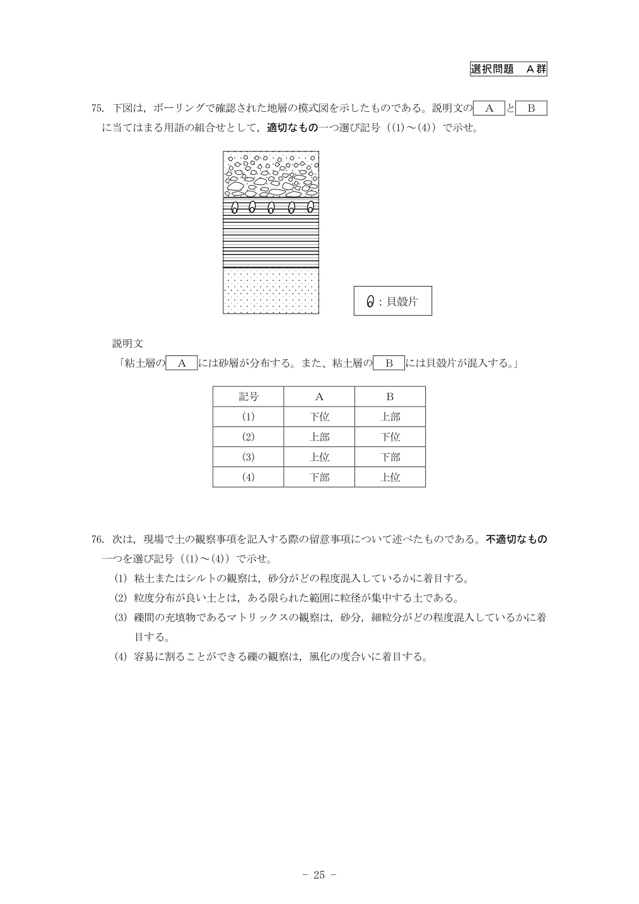
問76
A群（土質）
76. 次は，現場で土の観察事項を記入する際の留意事項について述べたものである。不適切なもの
一つを選び記号（(1)～(4)）で示せ。
(1) 粘土またはシルトの観察は，砂分がどの程度混入しているかに着目する。
(2) 粒度分布が良い土とは，ある限られた範囲に粒径が集中する土である。
(3) 礫間の充填物であるマトリックスの観察は，砂分，細粒分がどの程度混入しているかに着
目する。
(4) 容易に割ることができる礫の観察は，風化の度合いに着目する。
記号
Ａ
Ｂ
(1)
下位
上部
(2)
上部
下位
(3)
上位
下部
(4)
下部
上位
：貝殻片
- 26 -
選択問題 Ａ群
図表・イラスト確認用：PDF紙面（25ページ）を表示
問77
A群（土質）
77. 次は，微動アレイ探査について述べたものである。不適切なもの一つを選び記号（(1)～(4)）
で示せ。
(1) 表面波成分を利用して，地下のＳ波速度構造を推定する。
(2) 地表は平坦で，地下は概ね水平成層構造であることを前提とする。
(3) 測定点の配置は，円の中心１点と円周上に等間隔で３点の受振器を置く正三角形アレイが
一般的である。
(4) 探査深度については，アレイの形状や大きさにかかわらず一定である。
図表・イラスト確認用：PDF紙面（26ページ）を表示
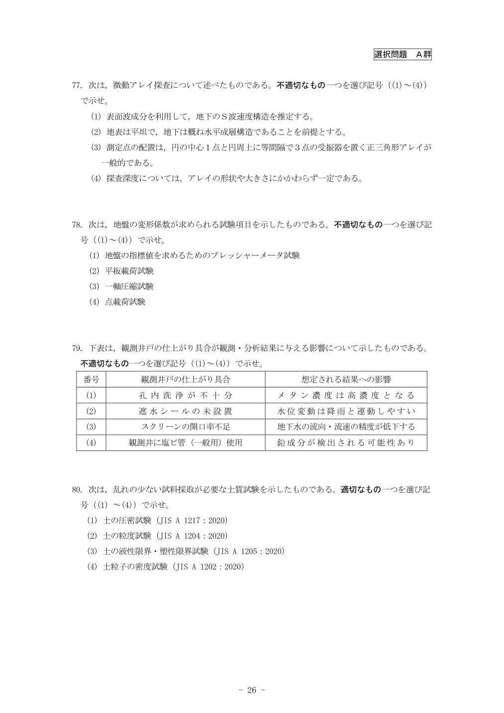
問78
A群（土質）
78. 次は，地盤の変形係数が求められる試験項目を示したものである。不適切なもの一つを選び記
号（(1)～(4)）で示せ。
(1) 地盤の指標値を求めるためのプレッシャーメータ試験
(2) 平板載荷試験
(3) 一軸圧縮試験
(4) 点載荷試験
図表・イラスト確認用：PDF紙面（26ページ）を表示
問79
A群（土質）
79. 下表は，観測井戸の仕上がり具合が観測・分析結果に与える影響について示したものである。
不適切なもの一つを選び記号（(1)～(4)）で示せ。
番号
観測井戸の仕上がり具合
想定される結果への影響
(1)
孔内洗浄が不十分
メタン濃度は高濃度となる
(2)
遮水シールの未設置
水位変動は降雨と連動しやすい
(3)
スクリーンの開口率不足
地下水の流向・流速の精度が低下する
(4)
観測井に塩ビ管（一般用）使用
鉛成分が検出される可能性あり
図表・イラスト確認用：PDF紙面（26ページ）を表示
問80
A群（土質）
80. 次は，乱れの少ない試料採取が必要な土質試験を示したものである。適切なもの一つを選び記
号（（1）～(4））で示せ。
(1) 土の圧密試験（JIS A 1217：2020）
(2) 土の粒度試験（JIS A 1204：2020）
(3) 土の液性限界・塑性限界試験（JIS A 1205：2020）
(4) 土粒子の密度試験（JIS A 1202：2020）
- 27 -
選択問題 Ｂ群
選択問題Ｂ群：22問（主に岩盤に関連した分野；問81～問102）
図表・イラスト確認用：PDF紙面（26ページ）を表示
問81
B群（岩盤）
81. 下図は，ダイアモンドコアビット（サーフェイスセットビット）を示したものである。Ａ～Ｄ
に当てはまる名称の適切な組合せ一つを選び記号（(1)～(4)）で示せ。
記号
Ａ
Ｂ
Ｃ
Ｄ
(1)
(2)
(3)
(4)
マトリックス
ゲージストーン
マトリックス
ヘッドストーン
ゲージストーン
ヘッドストーン
キッカーストーン
ゲージストーン
キッカーストーン
マトリックス
ヘッドストーン
キッカーストーン
ヘッドストーン
キッカーストーン
ゲージストーン
マトリックス
図表・イラスト確認用：PDF紙面（27ページ）を表示
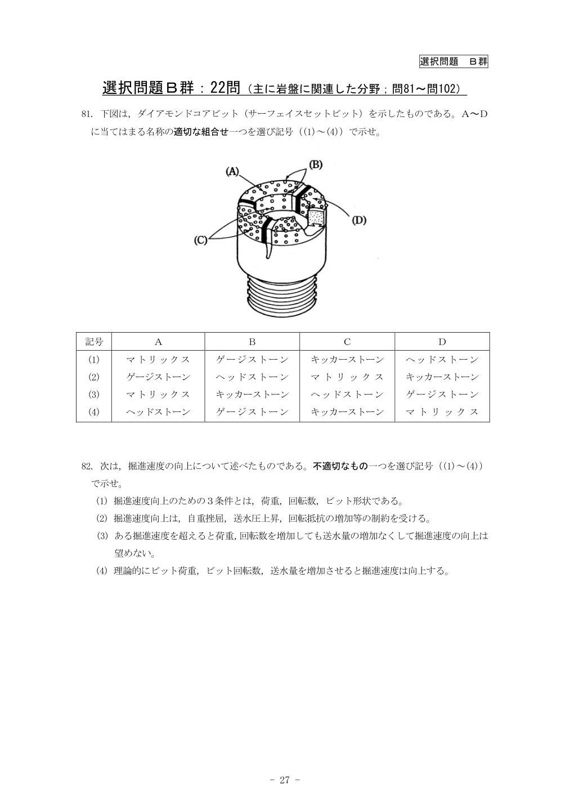
問82
B群（岩盤）
82. 次は，掘進速度の向上について述べたものである。不適切なもの一つを選び記号（(1)～(4)）
で示せ。
(1) 掘進速度向上のための３条件とは，荷重，回転数，ビット形状である。
(2) 掘進速度向上は，自重挫屈，送水圧上昇，回転抵抗の増加等の制約を受ける。
(3) ある掘進速度を超えると荷重，回転数を増加しても送水量の増加なくして掘進速度の向上は
望めない。
(4) 理論的にビット荷重，ビット回転数，送水量を増加させると掘進速度は向上する。
- 28 -
選択問題 Ｂ群
図表・イラスト確認用：PDF紙面（27ページ）を表示
問83
B群（岩盤）
83. 次は，掘進作業にあたっての主な要点について述べたものである。不適切なもの一つを選び記
号（(1)～(4)）で示せ。
(1) 地質条件に適合したビットを使用する。
(2) ビットに適合した掘進条件を決める。
(3) 掘進時，地質や孔内状況の変化について十分留意する。
(4) 実際の掘進作業時に掘進条件の変化があっても，計画通り掘進を行う。
図表・イラスト確認用：PDF紙面（28ページ）を表示
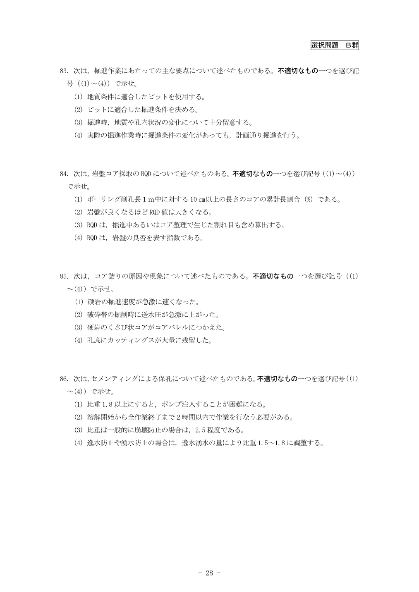
問84
B群（岩盤）
84. 次は，岩盤コア採取のRQD について述べたものある。不適切なもの一つを選び記号（(1)～(4)）
で示せ。
(1) ボーリング削孔長１ｍ中に対する10 ㎝以上の長さのコアの累計長割合（%）である。
(2) 岩盤が良くなるほどRQD 値は大きくなる。
(3) RQD は，掘進中あるいはコア整理で生じた割れ目も含め算出する。
(4) RQD は，岩盤の良否を表す指数である。
図表・イラスト確認用：PDF紙面（28ページ）を表示
問85
B群（岩盤）
85. 次は，コア詰りの原因や現象について述べたものである。不適切なもの一つを選び記号（(1)
～(4)）で示せ。
(1) 硬岩の掘進速度が急激に速くなった。
(2) 破砕帯の掘削時に送水圧が急激に上がった。
(3) 硬岩のくさび状コアがコアバレルにつかえた。
(4) 孔底にカッティングスが大量に残留した。
図表・イラスト確認用：PDF紙面（28ページ）を表示
問86
B群（岩盤）
86. 次は，セメンティングによる保孔について述べたものである。不適切なもの一つを選び記号（(1)
～(4)）で示せ。
(1) 比重1.8 以上にすると，ポンプ注入することが困難になる。
(2) 溶解開始から全作業終了まで２時間以内で作業を行なう必要がある。
(3) 比重は一般的に崩壊防止の場合は，2.5 程度である。
(4) 逸水防止や湧水防止の場合は，逸水湧水の量により比重1.5～1.8 に調整する。
- 29 -
選択問題 Ｂ群
図表・イラスト確認用：PDF紙面（28ページ）を表示
問87
B群（岩盤）
87. 次は，掘進中の孔内事故を分類し，それぞれ原因別に示したものである。適切なものを一つ選
び記号（(1)～(4)）で示せ。
記号
原 因
分 類
(1) 確認の不良
ロッド切断，ホルダすべりによるロッドの孔内落下
(2) 点検の不良
湧水，逸水の掘削障害の大半と一部の崩壊，押出し事故
(3) 作業・保孔の失敗
ケーシング事故，崩壊，抑留，押出し事故の大半
(4) 地質的原因
ロッド，その他工具類の孔内落下
図表・イラスト確認用：PDF紙面（29ページ）を表示
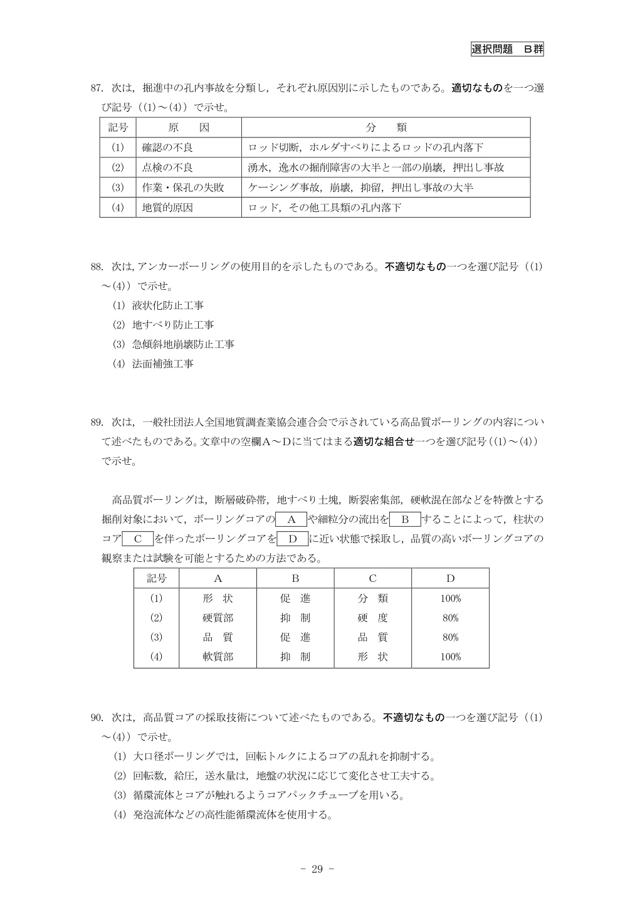
問88
B群（岩盤）
88. 次は,アンカーボーリングの使用目的を示したものである。不適切なもの一つを選び記号（(1)
～(4)）で示せ。
(1) 液状化防止工事
(2) 地すべり防止工事
(3) 急傾斜地崩壊防止工事
(4) 法面補強工事
図表・イラスト確認用：PDF紙面（29ページ）を表示
問89
B群（岩盤）
89. 次は，一般社団法人全国地質調査業協会連合会で示されている高品質ボーリングの内容につい
て述べたものである。文章中の空欄Ａ～Ｄに当てはまる適切な組合せ一つを選び記号（(1)～(4)）
で示せ。
高品質ボーリングは，断層破砕帯，地すべり土塊，断裂密集部，硬軟混在部などを特徴とする
掘削対象において，ボーリングコアの Ａ や細粒分の流出を Ｂ することによって，柱状の
コア Ｃ を伴ったボーリングコアを Ｄ に近い状態で採取し，品質の高いボーリングコアの
観察または試験を可能とするための方法である。
記号
Ａ
Ｂ
Ｃ
Ｄ
(1)
(2)
(3)
(4)
形
状
硬質部
品
質
軟質部
促
進
抑
制
促
進
抑
制
分
類
硬
度
品
質
形
状
100%
80%
80%
100%
図表・イラスト確認用：PDF紙面（29ページ）を表示
問90
B群（岩盤）
90. 次は，高品質コアの採取技術について述べたものである。不適切なもの一つを選び記号（(1)
～(4)）で示せ。
(1) 大口径ボーリングでは，回転トルクによるコアの乱れを抑制する。
(2) 回転数，給圧，送水量は，地盤の状況に応じて変化させ工夫する。
(3) 循環流体とコアが触れるようコアパックチューブを用いる。
(4) 発泡流体などの高性能循環流体を使用する。
- 30 -
選択問題 Ｂ群
図表・イラスト確認用：PDF紙面（29ページ）を表示
問91
B群（岩盤）
91. 次は，ボアホールジャッキ試験方法（JGS 3532-2012）について述べたものである。不適切なも
の一つを選び記号（(1)～(4)）で示せ。
(1) 等変位載荷方式の孔内載荷試験である。
(2) 試験深さの最小間隔は，ボアホールジャッキの長さの1.5 倍以上とする。
(3) 測定時間は，加圧後30 秒，1 分，2 分とする。
(4) 荷重増分は，予想最大加圧力の1/10 以下とする。
図表・イラスト確認用：PDF紙面（30ページ）を表示
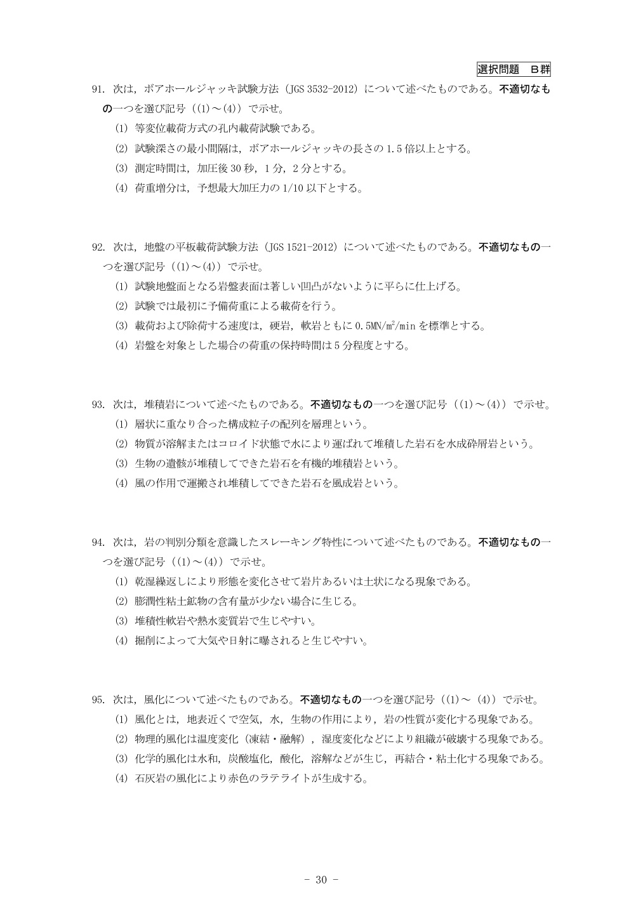
問92
B群（岩盤）
92. 次は，地盤の平板載荷試験方法（JGS 1521-2012）について述べたものである。不適切なもの一
つを選び記号（(1)～(4)）で示せ。
(1) 試験地盤面となる岩盤表面は著しい凹凸がないように平らに仕上げる。
(2) 試験では最初に予備荷重による載荷を行う。
(3) 載荷および除荷する速度は，硬岩，軟岩ともに0.5MN/m2/min を標準とする。
(4) 岩盤を対象とした場合の荷重の保持時間は5 分程度とする。
図表・イラスト確認用：PDF紙面（30ページ）を表示
問93
B群（岩盤）
93. 次は，堆積岩について述べたものである。不適切なもの一つを選び記号（(1)～(4)）で示せ。
(1) 層状に重なり合った構成粒子の配列を層理という。
(2) 物質が溶解またはコロイド状態で水により運ばれて堆積した岩石を水成砕屑岩という。
(3) 生物の遺骸が堆積してできた岩石を有機的堆積岩という。
(4) 風の作用で運搬され堆積してできた岩石を風成岩という。
図表・イラスト確認用：PDF紙面（30ページ）を表示
問94
B群（岩盤）
94. 次は，岩の判別分類を意識したスレーキング特性について述べたものである。不適切なもの一
つを選び記号（(1)～(4)）で示せ。
(1) 乾湿繰返しにより形態を変化させて岩片あるいは土状になる現象である。
(2) 膨潤性粘土鉱物の含有量が少ない場合に生じる。
(3) 堆積性軟岩や熱水変質岩で生じやすい。
(4) 掘削によって大気や日射に曝されると生じやすい。
図表・イラスト確認用：PDF紙面（30ページ）を表示
問95
B群（岩盤）
95. 次は，風化について述べたものである。不適切なもの一つを選び記号（(1)～ (4)）で示せ。
(1) 風化とは，地表近くで空気，水，生物の作用により，岩の性質が変化する現象である。
(2) 物理的風化は温度変化（凍結・融解），湿度変化などにより組織が破壊する現象である。
(3) 化学的風化は水和，炭酸塩化，酸化，溶解などが生じ，再結合・粘土化する現象である。
(4) 石灰岩の風化により赤色のラテライトが生成する。
- 31 -
選択問題 Ｂ群
図表・イラスト確認用：PDF紙面（30ページ）を表示
問96
B群（岩盤）
96. 次は，硬岩地盤の地表踏査時に記録すべき土木工学的問題点について述べたものである。不適
切なもの一つを選び記号（(1)～(4)）で示せ。
(1) 風化作用による不均質な軟質層の存在
(2) 破砕帯に沿った地すべり地の分布
(3) チャートで構成された膨張性地山の存在
(4) 断層破砕帯や熱水変質帯の存在による耐荷性や透水性での不均一さの存在
図表・イラスト確認用：PDF紙面（31ページ）を表示
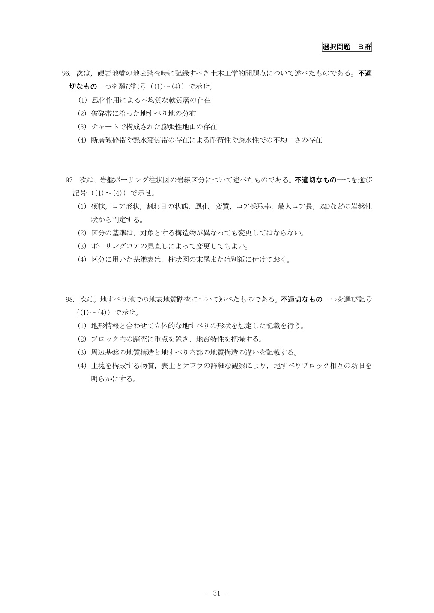
問97
B群（岩盤）
97. 次は，岩盤ボーリング柱状図の岩級区分について述べたものである。不適切なもの一つを選び
記号（(1)～(4)）で示せ。
(1) 硬軟，コア形状，割れ目の状態，風化，変質，コア採取率，最大コア長，RQDなどの岩盤性
状から判定する。
(2) 区分の基準は，対象とする構造物が異なっても変更してはならない。
(3) ボーリングコアの見直しによって変更してもよい。
(4) 区分に用いた基準表は，柱状図の末尾または別紙に付けておく。
図表・イラスト確認用：PDF紙面（31ページ）を表示
問98
B群（岩盤）
98. 次は，地すべり地での地表地質踏査について述べたものである。不適切なもの一つを選び記号
（(1)～(4)）で示せ。
(1) 地形情報と合わせて立体的な地すべりの形状を想定した記載を行う。
(2) ブロック内の踏査に重点を置き，地質特性を把握する。
(3) 周辺基盤の地質構造と地すべり内部の地質構造の違いを記載する。
(4) 土塊を構成する物質，表土とテフラの詳細な観察により，地すべりブロック相互の新旧を
明らかにする。
- 32 -
選択問題 Ｂ群
図表・イラスト確認用：PDF紙面（31ページ）を表示
問99
B群（岩盤）
99. 次の図は，面構造の走向および傾斜を測る道具である「クリ
ノメーター」の一例を示したものである。①～④に当てはまる
方位記号の適切な組合せ一つを選び記号（(1)～(4)）で示せ。
(1) ①=N ②=E ③=S ④=W
(2) ①=S ②=W ③=N ④=E
(3) ①=N ②=W ③=S ④=E
(4) ①=N ②=S ③=E ④=W
図表・イラスト確認用：PDF紙面（32ページ）を表示
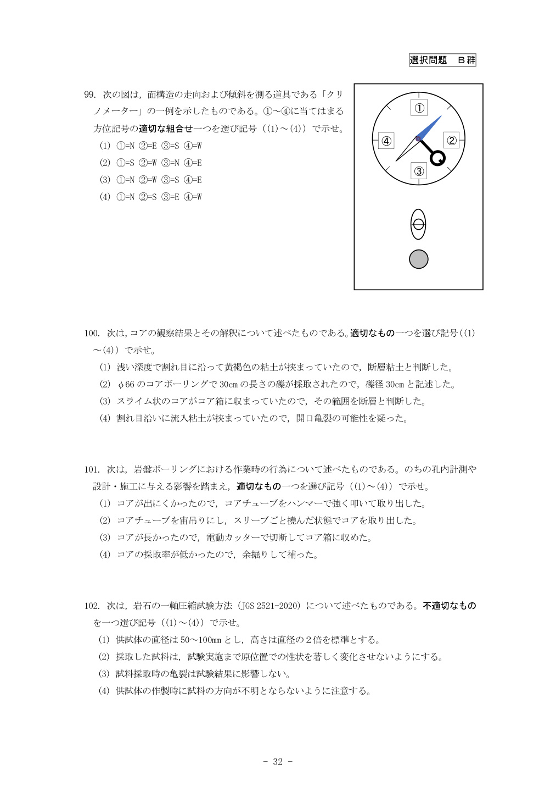
問100
B群（岩盤）
100. 次は，コアの観察結果とその解釈について述べたものである。適切なもの一つを選び記号（(1)
～(4)）で示せ。
(1) 浅い深度で割れ目に沿って黄褐色の粘土が挟まっていたので，断層粘土と判断した。
(2) φ66 のコアボーリングで30cm の長さの礫が採取されたので，礫径30cm と記述した。
(3) スライム状のコアがコア箱に収まっていたので，その範囲を断層と判断した。
(4) 割れ目沿いに流入粘土が挟まっていたので，開口亀裂の可能性を疑った。
図表・イラスト確認用：PDF紙面（32ページ）を表示
問101
B群（岩盤）
101. 次は，岩盤ボーリングにおける作業時の行為について述べたものである。のちの孔内計測や
設計・施工に与える影響を踏まえ，適切なもの一つを選び記号（(1)～(4)）で示せ。
(1) コアが出にくかったので，コアチューブをハンマーで強く叩いて取り出した。
(2) コアチューブを宙吊りにし，スリーブごと撓んだ状態でコアを取り出した。
(3) コアが長かったので，電動カッターで切断してコア箱に収めた。
(4) コアの採取率が低かったので，余掘りして補った。
図表・イラスト確認用：PDF紙面（32ページ）を表示
問102
B群（岩盤）
102. 次は，岩石の一軸圧縮試験方法（JGS 2521-2020）について述べたものである。不適切なもの
を一つ選び記号（(1)～(4)）で示せ。
(1) 供試体の直径は50～100mm とし，高さは直径の２倍を標準とする。
(2) 採取した試料は，試験実施まで原位置での性状を著しく変化させないようにする。
(3) 試料採取時の亀裂は試験結果に影響しない。
(4) 供試体の作製時に試料の方向が不明とならないように注意する。
①
②
③
④
- 33 -
必須問題
Ⅶ．記述式問題 (2問)
以下の問いに対する解答を答案用紙（その２）に記述せよ。
第１問
ボーリングマシンの作業前点検について下記の点検機械装置の中から３つ選び，点検項目を
それぞれ２つ記述せよ。
点検機械装置名：①機体 ②操縦装置 ③給油・計器 ④電気系統
第２問
ボーリング孔内水位の測定結果（例えばGL-1.25ｍ）を試錐日報で報告する際に，数値以外に
記載が必要な情報を①および②欄に１つずつ記せ。また，孔内水位をもとにボーリング地点の
地下水位を推定する場合，どのようなタイミング・掘削方法下で測定された孔内水位が最も適
当であるか，③欄に記せ。ただし，不圧（自由）地下水の環境下で地表下3ｍ以内に水位があ
る場合とする。